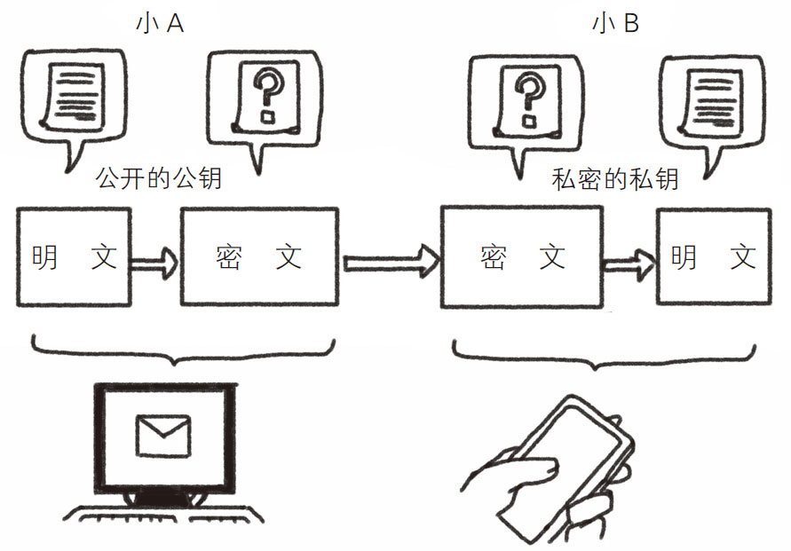
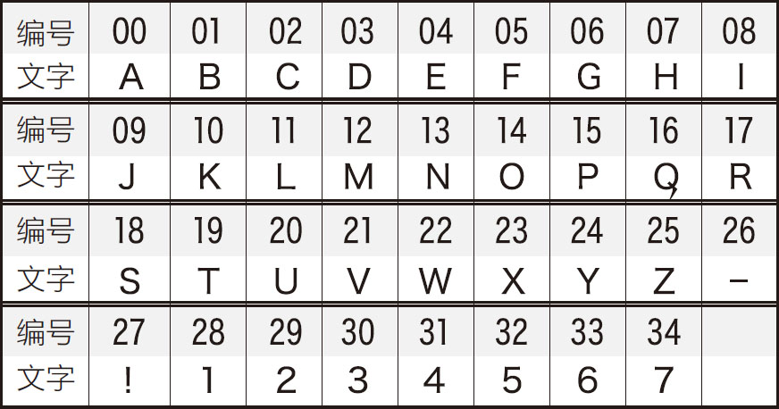

大家有编过密码吗？可能很多人小时候觉得好玩而编过吧，包括一些立刻就可以破解的密码。例如，大家知道密文“ZOOKD”的意思吗？
这是将一个英文单词中的每个字母变为它前面的字母后得到的。A的前面没有字母，就用Z来代替。大家都解开了吧？这个密文对应的就是“APPLE”这个单词。在密码学中，原文字（未被加密的文字）被称为“明文 ”，例如在以上例子中，“APPLE”就是明文。将密文还原为明文的过程被称为“解密 ”。密文“ZOOKD”的明文“APPLE”正是通过解密得来的。
在现代社会中，人们都是通过计算机交换信息的，因此总会出现一些恶意盗取他人信息的不法之徒。为了防范这些人，密码学就显得至关重要了。如果能通过加密 将明文转化为密文，再传递给对方，就算中途密文被盗，也不会泄露信息。
在密码学体系中，有一种使用质数的、名为“RSA公钥密码体制 ”的密码系统。它利用质数的特性，用一种非常有趣的方式编写密码，在这里一定要给大家介绍一下。RSA加密属于非对称加密 ，即加密密钥和解密密钥是不同的。其中，加密密钥被称为“公钥 ”，解密密钥被称为“私钥 ”。与非对称加密相对的是对称加密 ，它只有一个密钥，加密密钥和解密密钥是相同的，收发双方都使用这个密钥对信息进行加密和解密，所以解密方必须事先知道加密密钥。1976年之前普遍采用的是对称加密，这种加密方式一般通过以下步骤传递信息：
1．发送方将密钥给接收方；
2．发送方使用密钥对明文进行加密，传送得到的密文；
3．接收方使用密钥，将收到的密文解密成明文，获取信息。
上述过程看似十分简单，但是这种加密方式存在很大的安全隐患。因为只要知道密钥，任何人都可以进行加密或解密。一旦有恶意的第三方截获了步骤1的通信，密码将会被破解。
RSA公钥密码体制属于非对称加密系统。因为它们的加密方式是公之于众的，所以叫“公钥密码体制” 。当然，解密时所用的私钥一定要保密。而要想破解私钥，则难如登天，具体步骤如下：
1．接收方准备公钥和私钥；
2．接收方公开公钥，让任何人都能看到；
3．发送方用公钥对明文进行加密，之后发送密文；
4．接收方用只有自己才知道的私钥进行解密，获得信息。
两种方式的区别大家明白了吧？在公钥密码体制中，不需要发送私钥。接收方（图4-3中的小B）手中有公钥和私钥，但他只公开了公钥。因此，任何人都可以使用这个公钥将明文进行加密，并将密文发送给小B。但是，私钥只有小B知道，所以就算有人截取了通信也无法解密。这个具有划时代意义的密码体制是目前最具影响力和最常用的加密类型，它能够抵抗目前已知的绝大多数的密码攻击手段，并且已被国际标准化组织（International Organization for Standardization，简称ISO）推荐为公钥数据加密标准。RSA公钥密码体制是由美国麻省理工学院的罗纳德·李维斯特(Ron Rivest)教授、以色列密码学专家阿迪·萨莫尔（Adi Shamir）和南加州大学的伦纳德·阿德曼（Leonard Adleman）教授共同提出的。“RSA”中的三个字母分别为三人姓氏的首字母。

图4-3 公钥密码体制
好不容易了解了RSA加密体制，下面我们就来体验一下加密和解密。在本书的最后，有一道加密题请大家尝试解密一下。如果能自己加密和解密，就可以将不好直接传输的信息变成密文后发送。例如，想向意中人表达爱意时，就可以给她发送一封RSA加密情书。如果她对你没有爱意，就会当作一张废纸，扔进垃圾桶；如果她也对你有意，就一定会想尽办法破解的。
然而，破解RSA密码并非易事。其中的缘由不是几句话能解释清楚的，直接告诉大家结论吧：因为大整数的质因数分解是很困难的 。所谓分解质因数，就是将一个整数分解为几个质数相乘的形式，如35＝5×7。这个整数可以视为多个质因数的合，因此也被称为“合数”。小合数的质因数分解过程比较简单，如91＝7×13、3267＝33 ×112 、17017＝7×11×13×17。但是，当涉及数百位的超大合数的质因数分解时，连计算机也很难处理。
RSA算法正是基于此，用数百位的超级合数设置公钥和私钥。如果第三方非法监听者想要解密，必须对这个超级合数进行质因数分解，计算量之庞大，即使是最先进的计算机也要耗时数千年。所以，想要破解这类密码是非常困难的。
说了这么多，究竟怎样设置密钥呢？如果以实际通信中所用的数百位合数为例来讲解RSA的话，计算过程会非常烦琐，以致影响大家的理解。所以我们选取一个较小的合数——33来进行说明，全部步骤如表4-5所示，其中左侧是说明，右侧是具体示例，读者可以通过对照来了解这个过程。
不管怎样，接收方都需要预先设置公钥和私钥，所以我们从这里开始讲解。过程较为烦琐，不感兴趣的读者大致了解一下即可。但是如果想要破解后面的密文，就要非常仔细地阅读了。
首先，由接收方任选两个质数（在实际应用中，为提高加密强度，通常会选择数百位的超大质数）。选择好两个质数后，按照表4-5所示的步骤依次进行计算即可。表中的“公钥指数”是指用于将明文加密为密文的整数值。相应地，“私钥指数”是指用于将密文解密为明文的整数值。这两个指数都可以通过计算求得。
表4-5 公钥和私钥的生成
| 序号 | 步骤 | 说明 | 示例 |
| 1 | 选择质数 | 任意选择两个质数 | 选择3和11 |
| 2 | 计算合数n | 步骤1中选出的两个质数的乘积就是合数n | n ＝3×11＝33 |
| 3 | 计算φ | 先将步骤1中选取的两个质数分别减去1，再进行相乘，进而得到φ | φ ＝（3-1）×（11-1）＝20 |
| 4 | 公钥指数的生成 | 将与φ 的最大公约数是1，并且比1大、比φ 小的自然数设为公钥指数 | 由于与20的最大公约数是1，并且比1大、比20小的自然数是3，所以3就是公钥指数 |
| 5 | 私钥指数的生成 | 将（公钥指数×私钥指数）除以φ 余1的最小自然数设为私钥指数 | 先找到（3×x）÷20余1的最小自然数x。由于3×7＝21＝20×1＋1，7就是私钥指数 |
| 6 | 公钥和私钥 | 公钥指数与n 的集合为公钥，私钥指数与n 的集合为私钥，公钥是公开的，而私钥只有接收方知道 | 公钥为（3,33）， 私钥为（7,33） |
| 加密 | |||
| 7 | 文字数字化 | 用数字标注文字 | “H”→7等 |
| 8 | 加密 | 加密的公式如下： 密文＝明文公钥指数 除以n的余数 |
将“H”（7）进行加密，步骤如下： （1）明文公钥指数 ＝73 ＝343； （2）用343除以33，结果余13； （3）13就是“H”的密文 |
| 解密 | |||
| 9 | 解密 | 解密的公式如下： 明文＝密文私钥指数 除以n 的余数 |
解密的步骤如下： （1）密文私钥指数 ＝137 ； （2）137 除以33余7； （3）7就是明文 |
| 10 | 还原文字 | 将数字还原为文字 | 将7还原为“H” |
在RSA密码体系中，最重要的是第五步。因为在计算解密用的私钥指数时，必须求出步骤3中的“φ ”。要想求出这个参数，必须知道两个质数，而这两个质数是由接收方自己选择的，所以接收方可以很容易地算出φ ，至于那些意图盗取信息的不法之徒，自然不得而知。所以，即便公开了合数n ，如果求不出最初的两个质数，仍然算不出φ 的值，进而无法破解密码。前面提到过，这是一个需要耗费数千年的时间才能解决的巨大工程。
我们已经获得了公钥，下面就可以将明文转换为密文了。事实上，加密的算式非常简单，首先将明文中的文字进行数字化处理（如表4-5中的步骤7所示），也就是用1表示A、用2表示B，然后按照顺序为每个字标上号，也就是从0标到n -1（n 为合数），最后用下面的公式将明文转换为密文：
密文＝（“明文”的“公钥指数”次方）除以n 的余数
也就是说，将明文转换为数后，计算其公钥指数次方，再除以n ，得出的余数就是这个文字的密文。虽然这个过程十分简单，只需要进行一个乘方和除法运算就能完成，却能将原来的数变为与之毫无关联的密文。如果将除以n 后得到的余数作为密文，那么这个密文一定是在0～n -1之间的某个数。
最后一个步骤就是接收方用只有自己知道的私钥进行解密。这个过程与加密的步骤是相同的，只需按以下公式计算即可完成：
明文＝（“密文”的“私钥指数”次方）除以n 的余数
不可思议的是，通过以上计算就能得到明文。如果想知道为什么，就要使用一个名为“费马小定理”的公式来进行验证，太专业的内容我们在这里不进行阐述。总之，再将得出的数还原为文字，那么整个解密过程就结束了。
对于在公钥和私钥的地方就放弃研究的读者来说，加密和解密的过程也十分简单。另外，仅通过一个解密公式，怎么就能将密文还原为文字了呢？有兴趣的读者可自行研究，这里就不多讲解验证过程了。
接下来，为了检测大家是否真正掌握了密码学规律，我为大家准备了一道比较复杂的题。请读者解密以下两段RSA密文，其中，文字和编号的对应关系如图4-4所示。虽然解密成功后没有物质上的奖励，但是可以获取我的秘密箴言，所以请大家一定要尝试一下！
私钥：（5,35）
密文1：24 07 09 31 17 00 06 08 32 31 22 14 12 33 23 31 00 12 09 31 23 11 20 09 00 17 08 23 07 31 14 23 23 08 10 12 00 06 09；
密文2：24 07 00 13 05 31 19 14 20 31 10 14 12 31 12 09 00 33 08 13 06 31 24 07 08 23 31 01 14 14 05 27.

图4-4 文字和编号的对应关系
(1) 将棋，一种流行于日本的棋盘游戏。棋盘由9×9的方格组成，棋子共40枚，每方各20枚。将棋的玩法与中国象棋相似，不过在开局配置、棋子走法等方面均有不同。